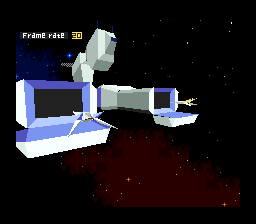

Star Fox 2
 Por Gigacom
Por Gigacom
Em pleno fim do ano de 1995, quando o
mundo gamistico passava por uma reinvenção da roda, com a
entrada em cena de consoles de 32 bits de peso e games ultra modernos
na tão esperada tecnologia 3D, Star Fox 2, um game esperado
ansiosamente por meio mundo de entusiastas para o Super NES, foi
sumariamente cancelado. Está bem, comecei contando o fim da
historia de maneira triste e direta, mas vamos voltar ao
começo de tudo e entender o que rolou.
Terra, ano MCMXCIV (1994)
 Senna
morreu, Brasil foi tetra, o Real apareceu, a classe média foi
enforcada e Star Fox 2 começou a ser projetado, quando o sucesso
do primeiro game já estava consolidado e a formula e tema dava o
retorno e segurança nescessários para a
produção de uma continuação. Diretoria da
Nintendo feliz, projeto aprovado, carta branca para a equipe de
produção, e mãos à massa de volta com a
Argonaut Games.
Senna
morreu, Brasil foi tetra, o Real apareceu, a classe média foi
enforcada e Star Fox 2 começou a ser projetado, quando o sucesso
do primeiro game já estava consolidado e a formula e tema dava o
retorno e segurança nescessários para a
produção de uma continuação. Diretoria da
Nintendo feliz, projeto aprovado, carta branca para a equipe de
produção, e mãos à massa de volta com a
Argonaut Games.
A Argonaut, foi uma das responsáveis pela produção
do Star Fox, dando todo o suporte à criação do
mundo 3D no SNES em todos os seus detalhes, sendo que a
produção e criação do jogo em si ficou
à cargo dos japoneses da Nintendo. Como era de se esperar, a
Argonaut voltou para ajudar na produção de Star Fox 2, e
muitas idéias e conceitos, tanto de jogo quanto da
renovação da engine 3D, ganharam vida graças aos
programadores dessa empresa.
O
jogo entrou em produção mais ou menos ali pelo fim
de 94, inicio de 95, e em setembro daquele ano, após uma boa
graninha torrada no suporte à produção, longas
semanas de programação, meses de
dedicação, o jogo já estava praticamente
finalizado, com tudo aquilo que viria a servir de escola para os jogos
3D (imagine, um mero SNES dando aula até para
Praystachion), um shooter completamente 3D, com navezinhas viajando em
um sistema solar enquanto combate forças inimigas em tempo real,
com um sisteminha bacana de equipes, interceptação,
combate nos mais diversos ambientes, livre movimentação,
surpresas e mais surpreas... enfim! Um jogo maravilhindo de se ver e
curtir! Único e impecável! Estupendo seria ainda um
elogio aquem do que era o jogo!
Alguém na Nintendo achou bom não lançar o jogo...
RAIOS! Mas por que? Qual o motivo? Quem entrou no meio, o Papa? Bill
Clinton? Quico? Nada, foi o Nintendo 64 mesmo.
Pois é seu Madruga, foi isso que aconteceu. Natal de 95 todo mundo esperava conhecer o 64 bits mais fuderoso do mundo (tá, nem tanto assim... mas era o que o povo acreditava na época), e a Nintendo tava era mais a fim de juntar bala para promover os incríveis games 3D para a nova plataforma do que dar ânimo para o povo possuidor de um 16 bit que, por mais capacidade que tivesse, não deveria ofuscar o lançamento e a filosofia do novo console.
Para que você possa entender melhor, veja, a Nintendo queria fazer do N64 um console único para a experiência em jogos 3D inexistentes em qualquer outro lugar, portanto, lançar um jogo 3D para o SNES com as qualidades do Star Fox 2, seria o mesmo que tirar o brilho da coisa que seria o 64-bits, então a Nintendo decidiu cancelar o Star Fox 2 em prol do N64, e posteriormente lançar para este console uma versão de Star Fox que realmente fizesse historia e jogasse o N64 à um lugar de destaque do lado do Sol, o que efetivamente aconteceu com o incrível e maravilhoso Star Fox 64, mas não no mesmo estilo e inovação de Star Fox 2.
E o SNES? Como fica esse vídeo game que rendeu bilhões para a Nintendo? Ela iria largá-lo assim do nada? Que é isso moço... nem pense numa coisa dessa. O SNES virou o console mais prestigiado de todos os tempos quando ganhou da Rare o Donkey Kong, e no natal de 95 Donkey Kong 2 rendeu lucros e fama ao SNES para nenhum vídeo game de 1000 bits botar defeito, ou seja, o SNES tinha muita lenha para queimar e se manter em meio à Praystachions e Saturns da vida por mais algum tempo.
Mas o que matou muita gente de raiva é que Star Fox 2 não foi um desses projetos feitos na mocó por uma equipe dentro dum banheiro trancado à cadeado durante 7 meses, para que nada vazasse... muito pelo contrário! O Star Fox 2 foi largamente anunciado pela Nintendo, revistas faziam matérias, obtiam fotos direto da fonte, alguns jornalistas viram a coisa funcionando, havia já a capinha do jogo, esquema para a produção do cartucho, manual de instrução, bicho de pelúcia do Fox Mac Loud, data de lançamento e por fim... o banho de água fria que todo mundo levou como se fossemos cachorros cruzando, acabando com toda a alegria da galera.
Essa é a caixa do jogo que muito moleque em 95
queria agarrar na loginha mais proxima de casa
Veja o relato que um carinha, o tio Dylan Cuthbert,
o Programmer Leader do jogo (estude muito se um dia quiser ter um cargo
desses) falou à não sei quem, mas que ficou gravado por
aí na internet e agora veio parar aqui também:
"StarFox 2 was fully completed. I was
the lead programmer and whilst Giles made Stunt Race FX, myself and the
rest of the original Starfox team (ie. Nintendo's artists and
designers) expanded Starfox into a full 3D shooting game. The reason
for non-release was the then impending Nintendo 64 which of course was
intended to be released a lot sooner than it actually was. Miyamoto-san
decided he wanted to have a clean break between 3D games on the SNES
and 3D games on the new superior 64-bit system. In retrospect, he could
have released Star Fox 2 and there would have been over a year and a
half before the N64 came out. But hindsight is always 20/20."
Traduzindo basicamente o que ele diz, é o que nós falamos
antes, a Nintendo engavetou o Star Fox 2 para não ofuscar o N64
e a temática 3D dele, deixando o SNES preso ao mundo 2D, apesar
do N64 só ter saído mesmo quase um ano e meio depois
contra todas as espectativas. De qualquer forma, um tal de Miyamoto (alguém conhece esse sujeito?) decidiu que deveria ser assim, Deus assinou embaixo, e o universo conspirou para que Miyamoto tivessse razão como sempre teve, e ponto.
MAS!
Deus é bom meus irmãos! Mas ele não teve participação na tramoia do Diabo, que deu jeito de roubar a rom do Star Fox 2 da cidadela da Nintendo, e disponibilizar democraticamente ao mundo pela internet. Depois ainda dizem que o tinhoso não tem seu lado bom, vê se pode!
A rom do Star Fox 2 você pode pegar clicando aqui, e curtir aí no conforto da sua casa o que seria, com toda certeza, o melhor jogo do SNES e talvez até de toda a era 16-bits, se brincar até seria um dos melhores de todos os tempos, como Zelda 64, Mario 64, Panzer Dragoon 2...
Abaixo, só mais umas imagens para
fechar o artigo. Claro, comentários, elogios, criticas e
ameaças de morte são aceitas, só ir lá no trombone e mandar o seu recado 
|  |


Ninja Gaiden para o Mega Drive
Leia aqui sobre uma das maiores pisadas na bola da Sega, e saiba porque o Hayabusa nunca deu as caras no 16 bits mais rápido do mundo!